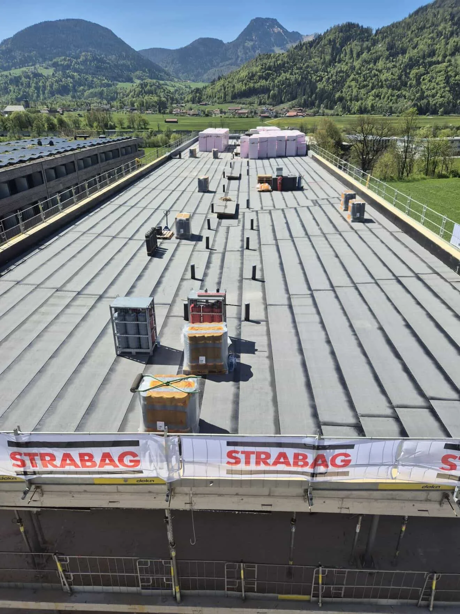
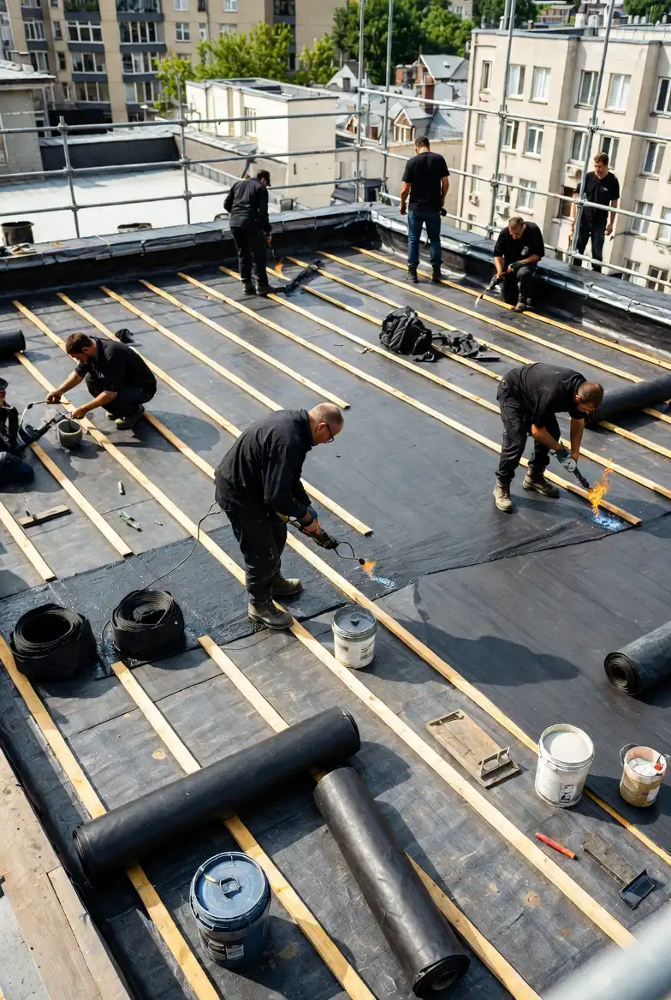

Flachdach
Neubau & SanierungDas Flachdach ist eine der ältesten Dachkonstruktionen in der Geschichte der Menschheit. Bereits während der Industrialisierung wurden große Hallenbauwerke mit Flachdächern errichtet. Diese Dachform bietet eine Vielzahl von Vorteilen und ermöglicht verschiedene Nutzungsmöglichkeiten und Gestaltungsoptionen. Zum Beispiel können Flachdächer als Dachterrassen, Dachgärten oder zur Installation von großflächigen Solaranlagen genutzt werden.
Professioneller Schutz vor Schäden
Um eine solche Nutzung zu ermöglichen, ist eine fachmännische Errichtung unerlässlich, da sonst leicht Feuchtigkeit und Nässe durch die Bauweise eindringen können. Vertrauen Sie auf unsere sorgfältige Arbeitsweise und unser umfassendes Wissen in der Abdichtung gegen Witterungs- und Umwelteinflüsse.
Dank unserer langjährigen Erfahrung als Flachdachexperten stehen wir Ihnen von Anfang an beim Bau Ihres Flachdachs zur Seite. Wir erkennen potenzielle Schwachstellen und sorgen für eine dauerhafte und optimale Abdichtung, um sicherzustellen, dass Ihr Flachdach nachhaltig geschützt ist.

